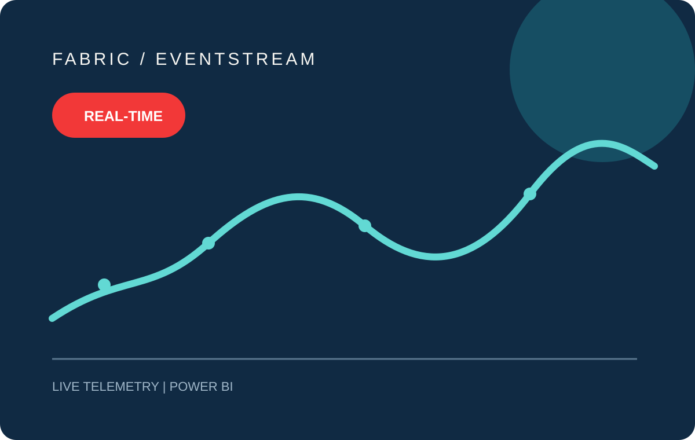
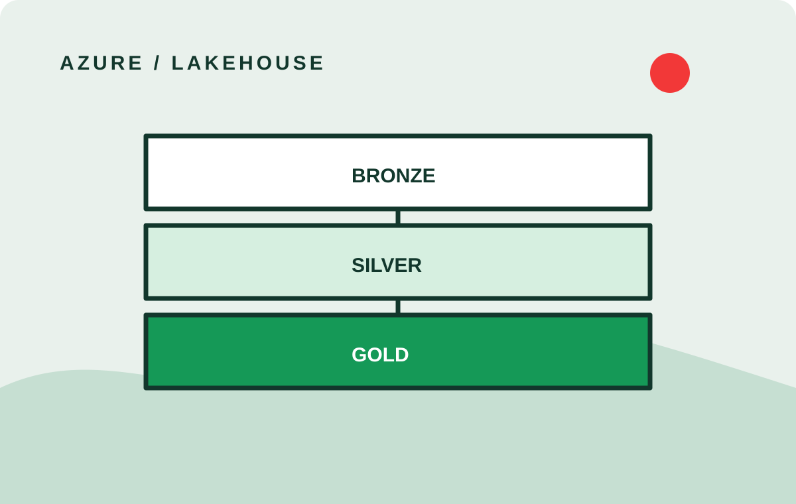
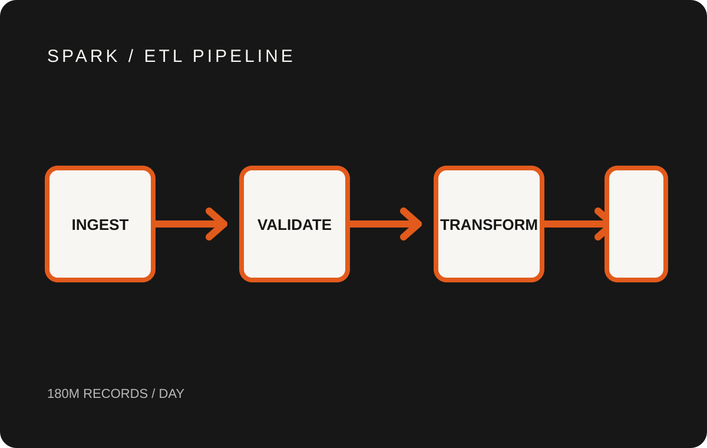

← Back to home
Topic · Data engineering
Scalable data platforms.
Architecture and implementation notes for streaming, lakehouse and high-volume batch systems.

Real-time streaming
Fabric Eventstream
A near-real-time IoT pipeline in Microsoft Fabric that streams sensor temperature telemetry into live Power BI monitoring for operations teams.
<5send-to-end latency

Lakehouse architecture
Azure Data Lake
Rebuilt a fragmented reporting stack into a governed lakehouse with clear medallion layers, fewer data incidents and fresher dashboards.
−42%pipeline failures

High-volume batch
Spark ETL Pipeline
Re-engineered slow, brittle transaction jobs into deterministic, recoverable Spark pipelines with stronger observability under peak load.
180Mrecords processed daily